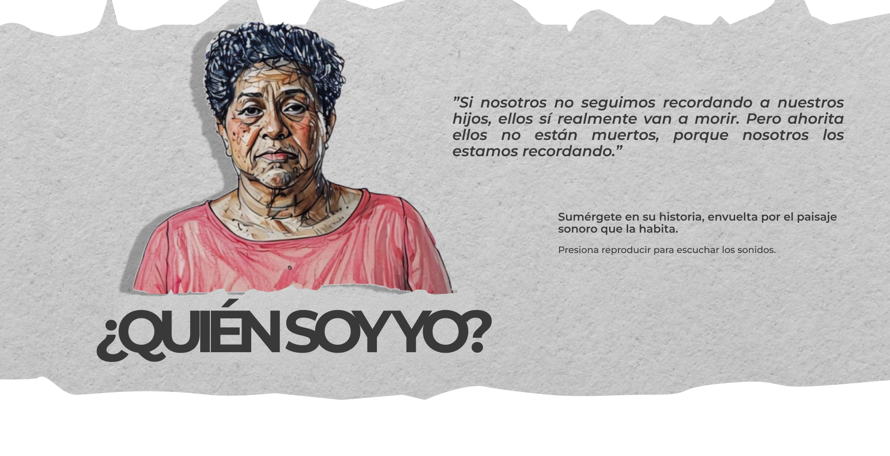

Desde niña viajé con mi papá que era arriero, es decir, una persona que transporta café o cualquier otra carga en mulas por las montañas. En esa época, en los años cincuenta, mi papá transportaba unas 40 mulas cargadas de café, maíz y frijol, y a veces, yo lo acompañaba. Cuando debíamos mudarnos de una hacienda a otra, toda la familia se movía en las mulas: mi mamá, mis hermanas y todas nuestras cosas.


“Está es mi infancia”.

Mi nombre es Blanca Monroy, nací en Uramita, Antioquia, el 18 de diciembre de 1958. Soy la hija mayor de Maria Oliva Varela y Arturo Monroy, y tengo dos hermanas menores, Edilma e Hilda.
Desde niña viajé con mi papá que era arriero, es decir, una persona que transporta café o cualquier otra carga en mulas por las montañas. En esa época, en los años cincuenta, mi papá transportaba unas 40 mulas cargadas de café, maíz y frijol, y a veces, yo lo acompañaba. Cuando debíamos mudarnos de una hacienda a otra, toda la familia se movía en las mulas: mi mamá, mis hermanas y todas nuestras cosas.
Cuando tenía siete años, vivíamos en Santa Rita de Ituango en una casa humilde, que tenía la cocina aparte y un fogón muy grande en piedra, y una viga de madera, o un palo, del que colgábamos las ollas. Me acuerdo mucho, que yo veía ese fogón grandote, y cuando me tocaba ayudar a cocinar, me subía en una banquita para poder echar el agua en las ollas. En esa cocina, hacíamos muchas cosas, como las arepas en tela con tocino frito para los desayunos, y los frijoles para los almuerzos. En esa finca cultivábamos cebolla y tomates pues hacíamos hogao, y también cidra y guineos, que nos servían para los frisoles, como les decíamos.
Un día, tuvimos que coger camino con toda la familia. Esa mañana mi papá le dijo a mi mamá: “quiubo pues mija, arreglate pues y arreglá las muchachas que nos vamos todos”. Edilma y yo nos fuimos en una bestia, y mi papá me dijo que no le fuera a dar juete a la bestia. Y como a mi me gustaba que los caballos corrieran y que el viento moviera mi cabello (lo tenía largo hasta la cadera), pues le di juete al caballo, y esa bestia salió desbocada conmigo y mi hermana. Como la silla no iba bien amarrada, mi hermana se cayó debajo del caballo. Mi papá se puso furioso porque yo le desobedecí, y me dio dos correazos.
Muy cerquita a la finca, ahí en Santa Rita, había una quebrada, la sevilla, que era muy cristalino. Mi mamá y otras mujeres iban a lavar allí la ropa, y nosotras, a remojarnos mientras ellas lavaban. Un recuerdo muy lindo que tengo en ese charquito, es que mi mamá lavaba bien arriba, y desde más abajo, sus amigas le gritaban: “Oliva, mandá la niña” entonces ella me envolvía en una sábana, me dejaba los brazos estirados por fuera, y me dejaba llevar un rato por la corriente, y más abajo, me recibían las otras muchachas. En la orilla de esa quebrada, había mucha hierba, en especial una que se llama la mano poderosa. Mi mamá la cogía, la secaba, la molía y con ese polvo mezclado con agua, hacía un engrudo con el que nos lavaba el cabello a todas.


La primera palabra de Julián fue Mamá. Me sentí muy contenta cuando lo escuché.
Cuando él tenía como tres años, cuando lo bañaba decía “fío, fío”, y eso no he podido olvidarlo. Cuando tengo frío, digo lo mismo “fío”.

Antes de Julián que es el hijo que desapareció y asesinó el ejército en 2008, yo había perdido a otro bebé. Dos meses después de esa pérdida, en 1987, volví a quedar embarazada y nació Julián. Fui muy feliz con ese embarazo, a pesar que ya tenía tres niños más en ese momento. Para ese momento vivíamos en Bogotá y me tocó irme sola al hospital Simón Bolívar, donde nació mi hijo, el 14 de octubre de 1988. Como yo llevaba ya cinco días de espera después de reventar fuente, mi hijo ya había perdido mucho líquido amniótico y tan pronto llegué al hospital, me pusieron en trabajo de parto. Julián nació de manera natural y tuvo un paro cardiorespiratorio, por lo que lo tuvieron un día en la incubadora. Al otro día nos dieron salida, y José fue por nosotros en la tarde.
Los primeros meses de maternidad fueron tranquilos y recuerdo mucho un momento en que lo estaba bañando, como cinco días después de su nacimiento, que él bostezo y me estiró las manos para que lo sacará de la tina. En ese momento sentí mucho amor y le hice un juramento: que yo nunca me iba a separar de él, pasara lo que pasara. Ese juramento nos ha tenido unidos, aún después de que lo desaparecieran y lo asesinaran. Es como si el cordón umbilical que compartimos, aún nos mantuviera unidos.
La primera palabra de Julián fue Mamá. Me sentí muy contenta cuando lo escuché.
Cuando él tenía como tres años, cuando lo bañaba decía “fío, fío”, y eso no he podido olvidarlo. Cuando tengo frío, digo lo mismo “fío”.
Vivíamos en una casa muy pequeña, y mis hijos se las ingeniaban para jugar a las escondidas y esconderse ahí. A los muchachos les gustaba el fútbol y salir de paseo.


“A los cinco días de haber nacido Julián, le hice un juramento: que yo nunca me iba a separar de él, pasara lo que pasara. Lo tomé en mis brazos después de bañarlo, él bostezó, estiró las manos y en ese momento sentí mucho amor y le hice el juramento.Ese juramento nos ha tenido unidos.”


Llegó mi familia y yo solo pude ir a la morgue hasta las tres de la mañana, no tenía fuerzas. Cuando llegué allá, creí que lo iba a ver, que me iban a mostrar el cuerpo pero me lo mostraron en un computador, frente a otros muchachos, me preguntaron si ahí estaba Eduardo y ahí estaba mi muchacho.
Era el 29 de agosto de 2008 y mi muchacho estaba en Cimitarra, no entendía por qué, me preguntaba todo, por qué, pero no hice más que coger carretera y salir a encontrarme con mi hijo. Cuando llegué allá recuerdo que lo toqué y lo sentí como gelatina; cuando lo vi reconocí el candado que tenía como barba, era mi Eduardo definitivamente.
En 2004 cuando Julián llegó a su adolescencia, empecé a sentir mucho miedo de que algo malo pudiera pasarle. Era un miedo muy grande. Había unos muchachos que lo seguían y querían hacerle daño, y por eso me tocó retirarlo del colegio.
Un día me fui a caminar sola, me senté en un barranco y le pedí al espíritu santo para que nos diera un lugar tranquilo para mis hijos. Al poco tiempo, nos avisaron que nos iban a reubicar en Soacha.
La llegada a Soacha fue tranquila para mí pero no para José, mi esposo. Julián ya tenía 17 años y empezó a trabajar en latonería en el barrio. Alcanzamos a vivir tranquilos tres años, antes de su desaparición en 2008.
La llegada a Soacha fue tranquila para mí pero no para José, mi esposo. Julián ya tenía 17 años y empezó a trabajar en latonería en el barrio. Alcanzamos a vivir tranquilos tres años, antes de su desaparición en 2008.
Llegó mi familia y yo solo pude ir a la morgue hasta las tres de la mañana, no tenía fuerzas. Cuando llegué allá, creí que lo iba a ver, que me iban a mostrar el cuerpo pero me lo mostraron en un computador, frente a otros muchachos, me preguntaron si ahí estaba Eduardo y ahí estaba mi muchacho.
Era el 29 de agosto de 2008 y mi muchacho estaba en Cimitarra, no entendía por qué, me preguntaba todo, por qué, pero no hice más que coger carretera y salir a encontrarme con mi hijo. Cuando llegué allá recuerdo que lo toqué y lo sentí como gelatina; cuando lo vi reconocí el candado que tenía como barba, era mi Eduardo definitivamente.


Sé que he aguantado muchos golpes fuertes y creo que mi fortaleza es el amor, porque quiero mucho a mis hijos y a mi familia. Mi fortaleza también puede ser soportar muchas cosas que me han pasado, por ejemplo, cuando mi hija se quemó a los 2 años y medio. Eso fue un dolor muy fuerte y fue algo que me causó una culpa muy grande, porque todo el mundo me señalaba por lo que le pasó a ella. Y mi hija aún me reclama por ese accidente.